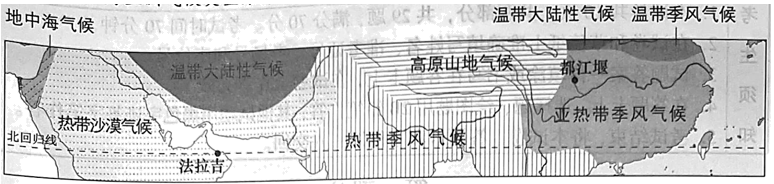
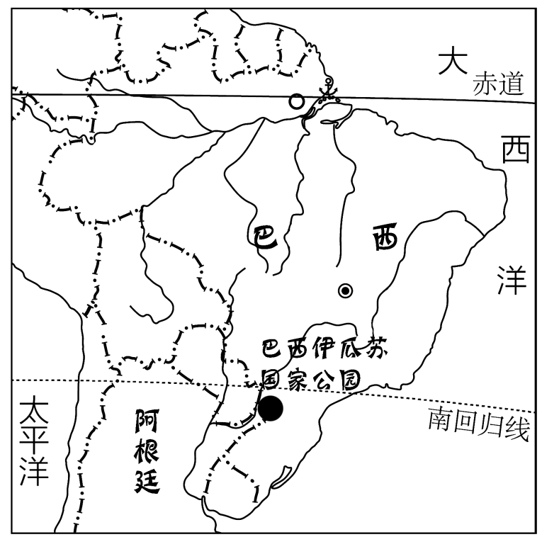
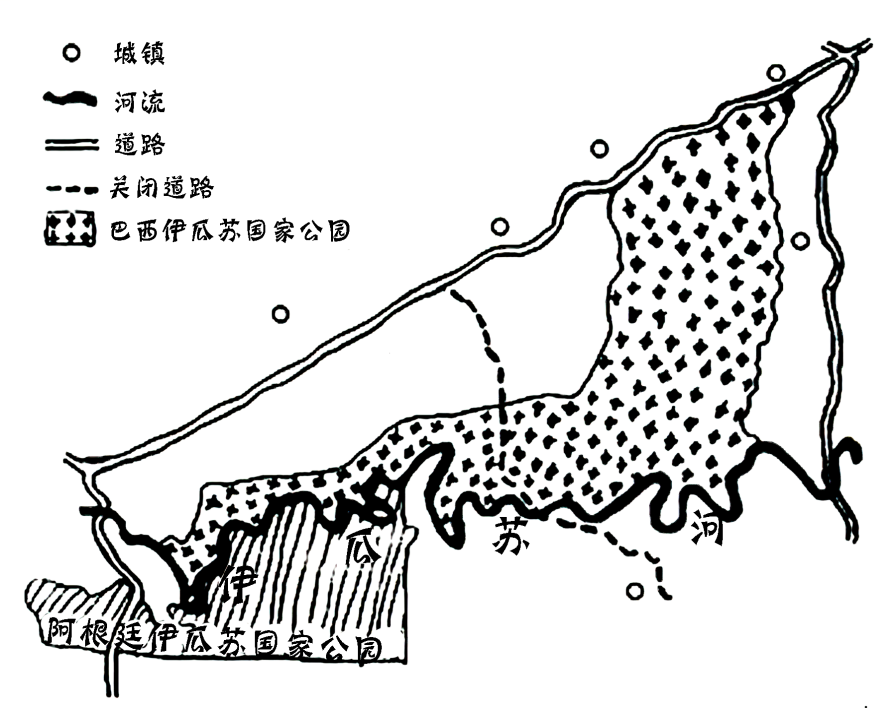

2023年北京市中考地理真题 · 选择题 第16、17、18、19、20题
我国是柑橘种植的起源地之一。柑橘通过多种途径向外传播。图为我国柑橘传播路线示意图。读图，完成下面小题。

16. 柑橘的传播可以（ ）
A. 增加原产地的年降水量B. 改变传入地的热量条件
C. 促进世界农业技术进步D. 消除地域发展水平差异
法拉吉和都江堰均是世界灌溉工程遗产。法拉吉将山泉水和地下水通过水渠引到山麓地带的村庄，用于生产生活。都江堰通过渠、堰调节岷江水，引水保障成都平原的农业生产。图为亚洲气候类型分布图（局部）。读图，完成下面小题。

17. 法拉吉和都江堰所在地区的气候类型分别是（ ）
A. 热带沙漠气候、亚热带季风气候B. 地中海气候、亚热带季风气候
C. 温带大陆性气候、热带季风气候D. 热带沙漠气候、高原山地气候
18. 两工程均（ ）
A. 因全年降水稀少而引水B. 通过减少蒸发避免水资源浪费
C. 因降水季节不均而蓄水D. 通过调配水资源提高利用效率
19. 两工程的主要作用是（ ）
A. 防风固沙B. 调节气候C. 灌溉农田D. 蓄水发电
巴西伊瓜苏国家公园和阿根廷伊瓜苏国家公园内动植物种类丰富，分别被列入《世界遗产名录》。因当地居民启用原本关闭的道路，1999年巴西伊瓜苏国家公园面临从名录中被删除的危险，2001年该道路重新关闭。图为巴西伊瓜苏国家公园手绘图。读图，完成下面小题。


20. 巴西伊瓜苏国家公园（ ）
A. 位于巴西的西南部B. 地处热带沙漠气候区
C. 内部被伊瓜苏河分割D. 内部城镇多、人口稠密